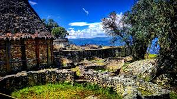

Cómo Llegar y Experiencia del Viajero

La ruta hacia Kuélap ha sido significativamente mejorada con la construcción del Teleférico de Kuélap, el primer teleférico turístico de Perú.
- Este sistema permite a los visitantes ascender desde el valle del río Tingo hasta la fortaleza en un viaje de solo 20 minutos, ofreciendo vistas espectaculares del paisaje circundante y haciendo que el acceso sea mucho más sencillo y rápido que la caminata tradicional.
- Visitar Kuélap es una experiencia que combina historia, arqueología y naturaleza. El lugar invita a los viajeros a sumergirse en la historia de una civilización misteriosa y a contemplar una obra maestra arquitectónica que desafió a la naturaleza y al tiempo, en un entorno de bosque nuboso y paisajes andinos.